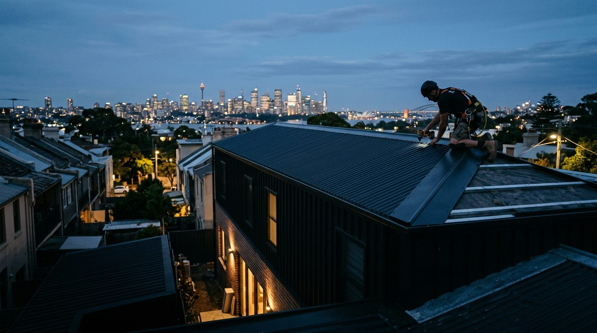

Inner City
Sydney CBD, Woolloomooloo, Potts Point, Darlinghurst, Surry Hills, Pyrmont, Ultimo
Licensed roof installers · Sydney
Licensed Sydney roof installers for homeowners, builders and commercial sites. Perfect 5-star record on Google.

Roofing services
New roofs, full replacements, repairs and leak fixes, plus maintenance advice. For homes, commercial properties and builder projects across Sydney.
New roofs for new builds, extensions and commercial projects.
Learn more → 02 / RENEWALStrip the tired roof, renew it properly, leave the house watertight.
Learn more → 03 / LEAKSTracking down the tricky leaks and fixing the cause, not the stain.
Learn more → 04 / CAREStraight advice on what your roof needs now and what can wait.
Learn more → 05 / COMMERCIALRoofing for commercial properties, planned around the site.
Learn more → 06 / TRADEA reliable roofing crew builders can slot into the program.
Learn more →Why choose Gauci
Every review names Daniel. Clients mention the same things again and again: he answers, he explains each step, and the job finishes on time.
How it works
Every roof is different, so every job starts with a conversation and a look at the roof itself.
Call, WhatsApp or send the quote form with your suburb and what is going on.
Daniel looks at the roof, the problem and the access before recommending anything.
A clear plan for the work, the timing and what happens if the weather turns.
The family team gets it done, with updates at each stage until it is finished.
From Google reviews
★★★★★
“Gauci Roof Installation fixed a very tricky roof leak for me. Daniel and his team were courteous, professional and great to deal with.”
★★★★★
“Recently Daniel installed a new roof on my house, and I couldn’t be more satisfied with their work. The team was professional, efficient, and completed the job on time.”
Where we work
Inner City, Eastern Suburbs, Inner West, North Shore, Lower North Shore, South Sydney and beyond.
Make an enquiry
Open Monday to Saturday, 24 hours. Call or WhatsApp Daniel on 0420 222 609.
Home / Services
Six ways the Gauci family team looks after Sydney roofs, from a brand-new install to the leak nobody else could find.
New roofs for residential and commercial clients, from new builds to extensions.
View service → 02 / RENEWALReplacing an existing roof that has reached the end of its life.
View service → 03 / LEAKSFinding where the water really gets in and fixing it properly.
View service → 04 / CAREAn honest look at your roof and practical advice to keep it sound.
View service → 05 / COMMERCIALInstalls, replacements and repairs for commercial properties.
View service → 06 / TRADERoofing that keeps the builder’s program moving.
View service →Not sure which?
Call or WhatsApp 0420 222 609, Monday to Saturday.
What it is
A new roof is fitted to a new build, an addition or a structure that has never had one. The team works from your plans, sets out the roof and installs it so it sheds Sydney’s heavy summer rain and handles the heat.
How the job is done
Related services
Planning a new roof?
What it is
A replacement removes the existing roofing and installs a new roof in its place. It is the right call when a roof keeps leaking in new places, the material has reached the end of its life, or you are renovating and want the roof to match.
Not sure whether to repair or replace? An inspection will tell you honestly.
How the job is done
Related services
Repair or replace?
What it is
Repairs cover anything from broken tiles and lifted sheets to failed flashings, valleys and gutters. Leak detection is the detective work first: where the water shows inside is often a long way from where it gets in.
How the job is done
★★★★★
“Gauci Roof Installation fixed a very tricky roof leak for me. Daniel and his team were courteous, professional and great to deal with.”
Related services
Leaking now?
What it is
An inspection checks the roof covering, flashings, valleys, gutters and the roof space for wear and early problems. You get practical maintenance advice in plain language, so you can plan repairs on your terms rather than after a storm.
How the job is done
Related services
Peace of mind
What it is
Commercial roofs are larger, often busier sites, with tenants, access and timing to manage. The Gauci team installs, replaces and repairs commercial roofs, planning the work around the property and the weather.
How the job is done
Related
Commercial enquiry
What it is
Daniel works with builders on new homes, extensions and commercial jobs, slotting the roof into the program and keeping the site manager in the loop. One client has worked with him across residential and commercial properties for many years.
How the job is done
Related
Builders
Home / Builders & commercial
Daniel Gauci’s team works for builders and commercial clients as well as homeowners: punctual, honest and easy to coordinate with.
What you get
Builders and property owners need a roofer who turns up, communicates and finishes. That is what clients say about Daniel.
Arrives when agreed, so the next trade isn’t left waiting.
Daniel answers the phone and keeps you updated at each step.
Plans adapt mid-project to the conditions, so the build stays protected.
In a client’s words
Dane L., who has worked with Daniel across residential and commercial properties.
Have a project coming up?
Call or WhatsApp 0420 222 609, Monday to Saturday.
Home / About
A Sydney roofing business built on answering the phone, turning up on time and finishing the job properly.
Our story
Gauci Roof Installation is run by Daniel Gauci with his family team, working from Woolloomooloo in Sydney’s inner east. The business has traded as Gauci Roof Installation Pty Ltd since December 2020, installing new roofs, replacing old ones and fixing leaks for homeowners, builders and commercial clients.
Daniel is named in every review the business has received. Clients describe him as punctual, honest and easy to reach, and the team as professional, courteous and efficient. One client has worked with him across residential and commercial properties for many years.
That reputation shows in the numbers: a perfect 5.0 on Google from 24 reviews.
What we value
Credentials
Verified business details, so you know exactly who is on your roof.
Meet Daniel
Home / Service areas
Based at 100 William St, Woolloomooloo, the team works across Sydney. Not sure if your suburb is covered? Just ask.
Sydney CBD, Woolloomooloo, Potts Point, Darlinghurst, Surry Hills, Pyrmont, Ultimo
Paddington, Woollahra, Double Bay, Bondi, Randwick, Coogee, Maroubra
Newtown, Glebe, Balmain, Leichhardt, Annandale, Marrickville, Ashfield
North Sydney, Neutral Bay, Mosman, Cremorne, Crows Nest, Lane Cove
Chatswood, Willoughby, Lindfield, Killara, Gordon, Pymble, Wahroonga
Redfern, Waterloo, Alexandria, Zetland, Mascot, Rosebery, Botany
And further across greater Sydney. Suburb lists are examples within each region; call 0420 222 609 to confirm your location.
Your suburb
Home / Reviews
Every review names Daniel. Here are a few, word for word from Google.
★★★★★
“Very happy with the service we received from Daniel & the team! Professional, reliable & were able to adapt plans to the weather conditions mid project. Daniel always answered the phone & communicated each step of the process.”
★★★★★
“Recently Daniel installed a new roof on my house, and I couldn’t be more satisfied with their work. The team was professional, efficient, and completed the job on time.”
★★★★★
“Gauci Roof Installation fixed a very tricky roof leak for me. Daniel and his team were courteous, professional and great to deal with.”
★★★★★
“I’ve had Daniel work with me across various properties (residential and commercial) for many years. He’s punctual, honest and always delivers great work.”
Your turn
Home / FAQ
General guidance for Sydney property owners. For advice on your own roof, talk to Daniel.
Got a different question?
Home / Contact
Tell us about the roof. The form opens a pre-filled WhatsApp message to Daniel, or call 0420 222 609.
Mon–Sat, 24 hours
Closed Sunday
Prefer to talk?
Monday to Saturday, 24 hours.